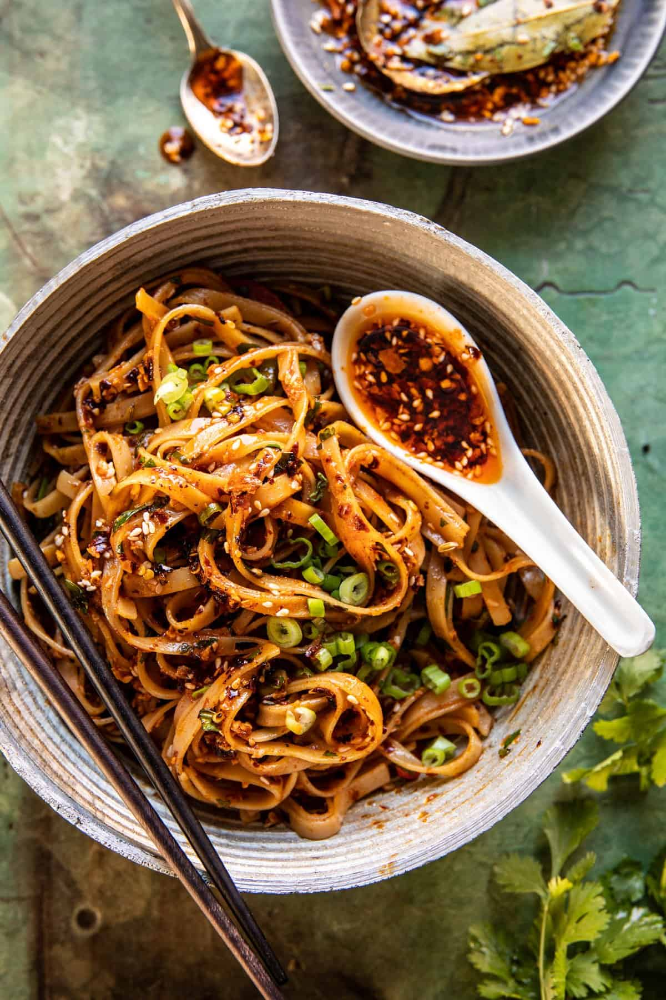

Garlic Chili Oil Noodles

Description
These easy garlic chili oil noodles are not for those with a mild palate! Wok-fried garlic chili oil takes ramen noodles to a new level.
Ingredients
- 1 package ramen noodles
- 2 teaspoons sesame oil
- 2 teaspoons soy sauce
- 1 tablespoon chiu chow style chili oil
- 4 cloves garlic, minced
- 1 pinch black sesame seeds
- 1 teaspoon minced garlic
- 2 green oinons, sliced diagonally, or to taste
Steps
- Bring a pot of water to a boil over high heat. Add ramen noodles, and cook until tender, 3 to 4 minutes.
- Meanwhile, heat sesame oil, soy sauce, and chili oil in a wok over medium-high heat.
- Add garlic and stir fry until fragrant, 30 to 45 seconds. Remove from heat. Drain ramen noodles, add to the wok, and toss to coat. Sprinkle with sesame seeds and scallions for garnish. Enjoy!
Return to main page